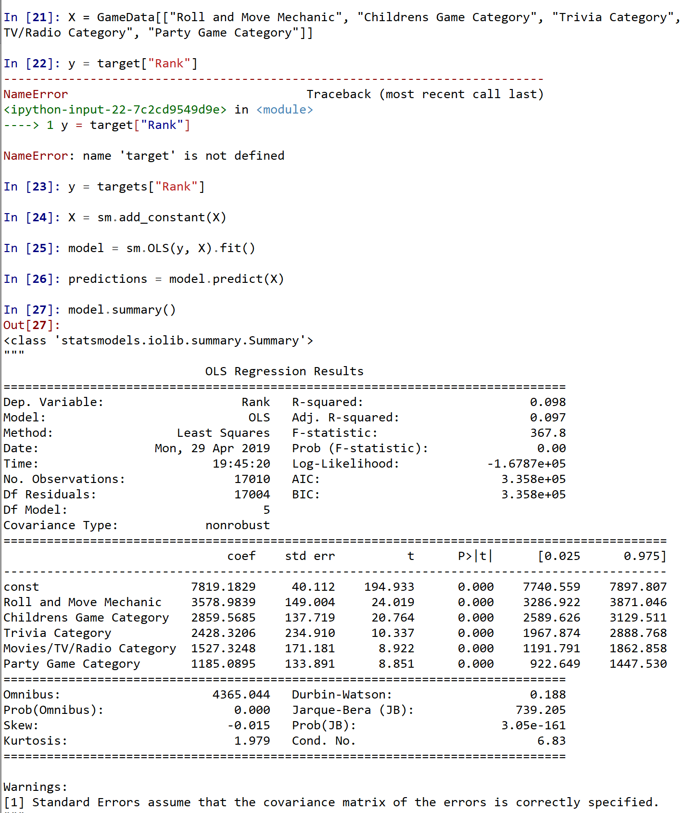
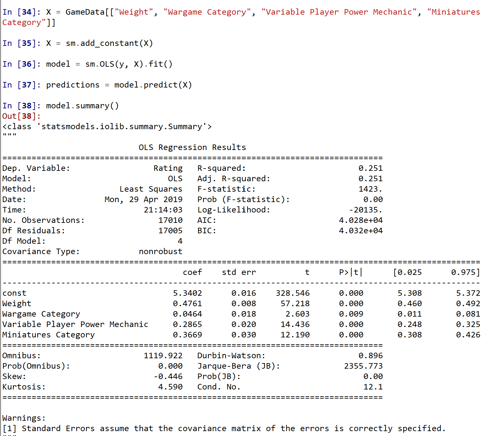
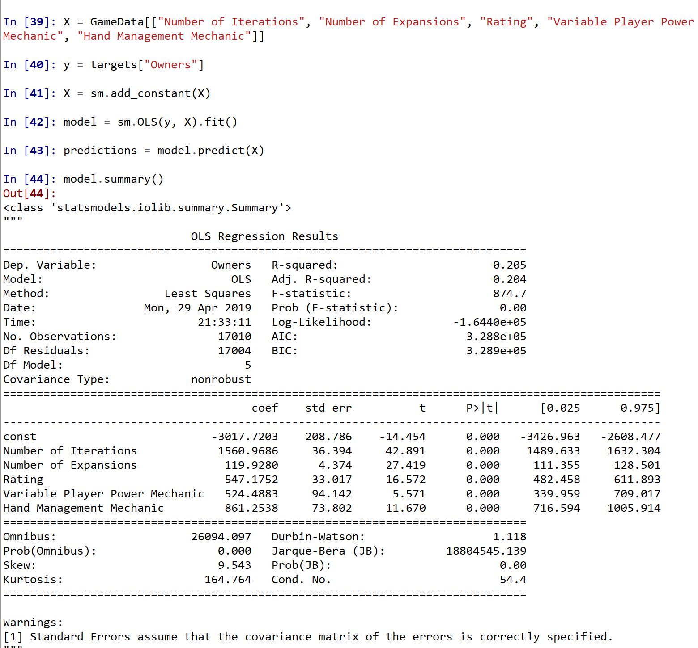
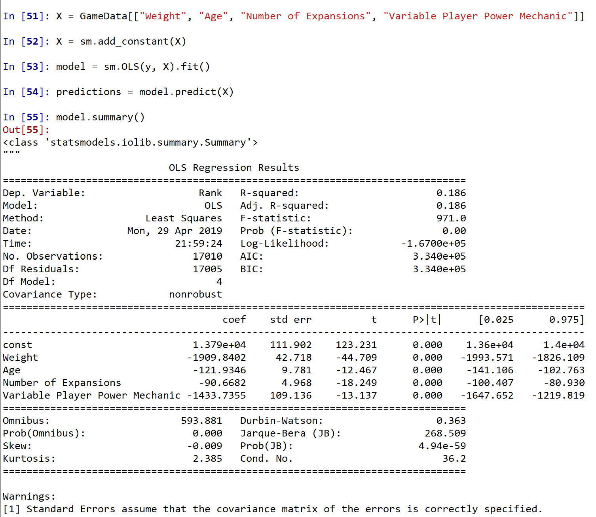
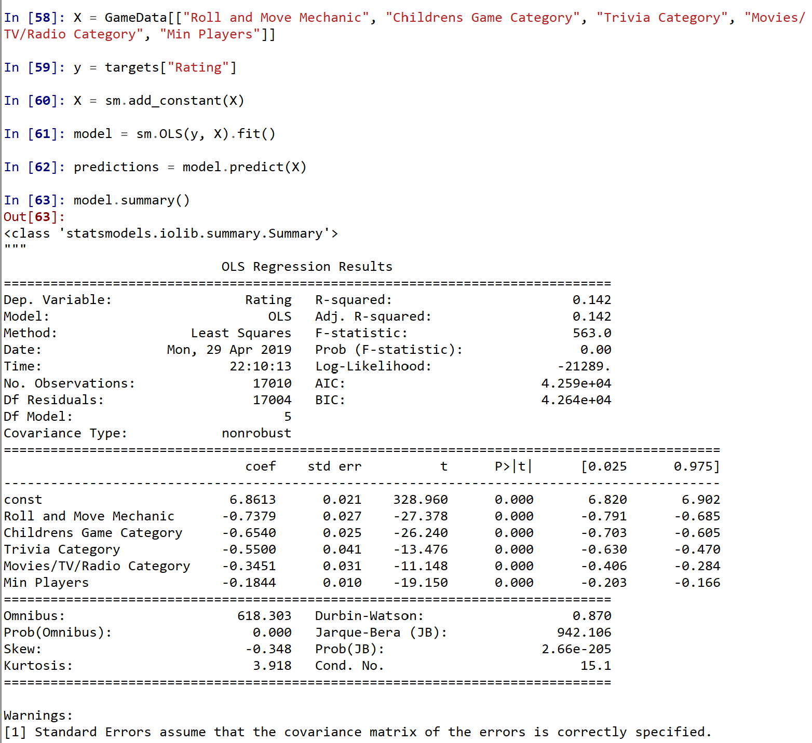
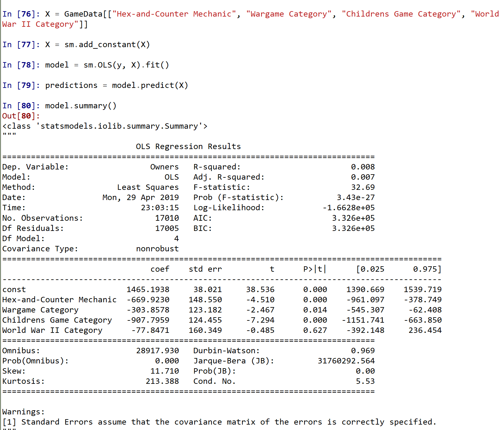

The variables used here were: Roll and Move Mechanic, Childrens Game Category, Trivia Category, Movies/TV/Radio Category, Party Game Category

The coeffcient for each of these variables is:
(Assuming everything else is 0, this is what we expect the rank to be)
(If a game uses a Roll and Move Mechanic, I can predict that its rank will increase by about this amount)
(If a game is a Children's game, I can predict that its rank will increase by about this amount)
(If a game is a Trivia game, I can predict that its rank will increase by about this amount)
(If a game is based on a Movie/TV Show/Radio Play, I can predict that its rank will increase by about this amount)
(If a game is a party game, I can predict that its rank will increase by about this amount)
In addition, since the t-values for all of these are greater than 1.96, these are all statistically significant at the 5% level
The variables used here were: Weight, Wargame Category, Variable Player Power Mechanic, Miniatures Category
Owners has been dropped dues to potential problems of multicolinearity

The coeffcient for each of these variables is:
(Assuming everything else is 0, this is what we expect the average rating to be)
(If a game increases its Weight (A measure of difficulty or complexity, not of mass), I can predict that its rating will increase by about this amount)
(If a game is a Wargame, I can predict that its rating will increase by about this amount)
(If a game has a Variable Player Power Mechanic, I can predict that its rating will increase by about this amount)
(If a game includes Plastic Miniatures, I can predict that its rating will increase by about this amount)
In addition, since the t-values for all of these are greater than 1.96, these are all statistically significant at the 5% level
The variables used here were: Number of Iterations, Number of Expansions, Rating, Variable Player Power Mechanic, Hand Management Mechanic
Owners has been dropped dues to potential problems of multicolinearity

The coeffcient for each of these variables is:
(Assuming everything else is 0, this is what we expect the amount of people who own the game to be)
(If a game is remade or redeveloped one more time, I can predict that this many more people will own it)
(If a game gets another expansion, I can predict that this many more people will own it)
(If a game's rating increases by 1, I can predict that this many more people will own it))
(If a game includes a Variable Player Power Mechanic, I can predict that this many more people will own it)
(If a game includes a Hand Management Mechanic, I can predict that this many more people will own it)
The t-value for all of these are greater than 1.95, except for the constant. This means that the constant is not statistically significant, but the rest of the variables are
The variables used here were: Weight, Age, Number of Expansions, Variable Player Power Mechanic
Owners has been dropped dues to potential problems of multicolinearity

The coeffcient for each of these variables is:
(Assuming everything else is 0, this is what we expect the rank to be)
(If a game increases its Weight (A measure of difficulty or complexity, not of mass), I can predict that its rank will increase by about this amount. Since the coefficient is negative, this means it will reduce)
(If a game's suggested minimum age is 1 year later, I can predict that its rank will increase by about this amount. Since the coefficient is negative, this means it will reduce)
(If a game gets another expansion, I can predict that its rank will increase by about this amount. Since the coefficient is negative, this means it will reduce)
(If a game includes a Variable Player Power Mechanic, I can predict that its rank will increase by about this amount. Since the coefficient is negative, this means it will reduce)
In addition, since the absolute value of the t-values for all of these are greater than 1.96, these are all statistically significant at the 5% level
The variables used here were: Roll and Move Mechanic, Children's Game Category, Trivia Category, Movies/TV/Radio Category, Minimum Player Count

The coeffcient for each of these variables is:
(Assuming everything else is 0, this is what we expect the rating to be)
(If a game uses a Roll and Move Mechanic, I can predict that its rating will increase by about this amount. Since the coefficient is negative, this means it will reduce)
(If a game is a Children's Game, I can predict that its rating will increase by about this amount. Since the coefficient is negative, this means it will reduce)
(If a game involves Trivia, I can predict that its rating will increase by about this amount. Since the coefficient is negative, this means it will reduce)
(If a game is based on a Movie/TV Show/Radio Play, I can predict that its rating will increase by about this amount. Since the coefficient is negative, this means it will reduce)
(If a game's minimum player count increases by 1, I can predict that its rating will increase by about this amount. Since the coefficient is negative, this means it will reduce)
In addition, since the absolute value of the t-values for all of these are greater than 1.96, these are all statistically significant at the 5% level
The variables used here were: Hex-And-Counter Machanic, Wargame Category, Childrens Game Category, World War II Category
Rank was removed due to potential problems of multicolinearity

The coeffcient for each of these variables is:
(Assuming everything else is 0, this is how many people we expect to own the game)
(If a game involves a Hex-and-Counter mechanic, I can predict that this many more people will own it. Since the coefficient is negative, this means it will reduce)
(If a game is a Wargame, I can predict that this many more people will own it. Since the coefficient is negative, this means it will reduce)
(If a game is a Children's Game, I can predict that this many more people will own it.)
(If a game is about World War II, I can predict that this many more people will own it. Since the coefficient is negative, this means it will reduce)
The absolute value of the t-values for the constant, Children's Game Category, Hex-and-Counter Mechanic, and Wargame Category are greater than 1.96, so these are all statistically significant at the 5% level. The World War II Category is not statistically significant, as it falls below this threashold